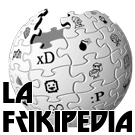

Mario Kart
 De: La Frikipedia, la enciclopedia extremadamente seria.
De la serie Videojuegos:
Mario Kart

Mario manejando responsablemente
| Desarrollado por:
|
Noentiendo EAD
|
| Distribuido por:
|
El kiosquero de la esquina
|
| Diseñado por:
|
Shigeru Miyamo moto
|
| Motor
|
casi todos de gasolina
|
| Género(s)
|
carreras
|
| Fecha de lanzamiento:
|
ayer
|
| Modos de juego:
|
como más te guste
|
| Requisitos:
|
Manos y carnet de conducir
|
| Disponible en:
|
la pista
|
| Formatos:
|
NDS y NDS
|
| Edades:
|
cualquira, procure no sufrir de corazón
|
| Puntuaciones:
|
no se soy malo
|
alcanzame si puedes
Mario Kart es otro de los juegos de Mario, que ya parece más rico que Bill Gates, en los que se reúnen todos sus compañeros (y compañeras, aunque Mario no sabe qué pintan ahí) para correr como locos en circuitos muy diferentes y a veces hasta estúpidos. Rompiendo las Leyes de la Física como en todos los juegos de Noentiendo...
PERSONAJES
- Mario: Bueno, supongo que sabéis quien es, pero os hago un repasito: es ese fontanero con un mono vaquero (No, no es Amelio) que lo único que hace es tragar setas alucinógenas como loco.
- Luigi: Hermano de Mario, con otro mono, y otro que traga setas a lo loco, aunque éste… como que va un poco más a su ritmo.
- La Princesa
Bitch Peach: Esta loca princesa amante de Mario que no para de ser secuestrada por Bowser, se ha tomado unas vacaciones de verano para ponerse a cuatro patas ruedas y competir contra los demás.
- Daisy: La malvada y diabólica hermana de Peach, intenta cargársela (y de paso violarse a Luigi) para montárselo con todos sus Toads, pero Peach no le deja ya que es mas mejor.
- Yoshi: Vulgar imitador del oso Yoghi y cuñado de Godzilla. Este bicho raro que se esconde en las plantaciones para tragarse al primero que pasa, creo que no se nota que sus amigos le ponen verde a las espaldas, es un mal corredor, solo va pensando en que chupar con su lengua, que longitud no le falta … (No os vayáis por ese camino, malpensados)
- Toad: Este… champiñón es el guardián del castillo,
se ha venido a correr con su champi-bólido para que no le pase nada a la princesa, no sé como el pendejo éste no muere si nunca lo riegan, será una seta milagrosa. (Ha estado a punto de morir varias veces en manos de Mario, o mejor dicho, en la boca de Mario)
- Donkey Kong (DK): Éste mono fumata lo único que pinta en el juego es que posee el Trofeo Plátano, además es un mal padre ya que no se trae nunca a sus hijos para que hagan compañía, ni al padre ni a la madre. Yo no sé como aún existe… estará a régimen. Aparte de que su hijo Diddy Kong se de una nalgadas cuando pasas una rampa en el wiiii
- Wario: Esta bola de grasa, carne, tapitas del bar y quien sabe que más mierdas, nadie sabe que pinta en un coche, sabiendo que puede rodar fácilmente, a veces desaparece de la pantalla (almenos a mí) siempre lo encuentro en la despensa. (P.D.: menuda pasta que se tiene que gastar en ruedas nuevas).
- Bowser: Esta medio tortuga obesa medio dragón que siempre está caliente, hasta que un día se queme el mismo, va arrasando con todo lo que pilla, y no exagero, mejor no cruzarte con él, bueno, si queréis hacer un viaje a algún sitio que esté lejos… Además ¡es gratis!
- Huesitos :(no los de chocolate)Mmmm: El esqueleto que ha quedado de un Koopa Troopa (tortuga maldita ojona que te molesta) que murió en una dura batalla con Chuck Norris (dura para él, no para Chuck, obviamente).
- Waluigi: Este primo de Luigi, pega unas zancadas tremendas, ademas, se le nota en la expresión de la cara que a su coche le falta el asiento… qué agustito se tiene que estar ahí ^^
- R.O.B (o Cabeza de Tornillo Blazer, como me solían llamar cuando jugaba con él): El diminutivo de Robot Orondo Bobo, ya que esta maquina robótica es peor que un Play Móvil, porque de móvil no tiene nada, si intentas girar se pone a bailar como un loco.
- Bill Gates: Personaje que puedes controlar si te pasas el juego con la princesa y das 100 vueltas a 200 kmh DESDE EL PRINCIPIO HASTA EL FINAL. Se caracteriza por ser el más idiota de todos los personajes.
- Frenando Alonso: Ser inferior que podrás controlar si te pasas el juego con venticatorce y tropecientos personajes a la vez sin repetirlos usando un tutú de color amarillo a topos violetos y lentejuelas, con un moco colgando mientras das una voltereta de 180º centígrados y te quedas boca abajo sujetándote con el bigote. Probadlo, probadlo.
- Chuck Norris: Personaje con un auto capaz de volar, atravezar paredes y dar ostias a los demás. Lo puedes desbloquear pasandote la ultima copa a máxima dificultad con una mano atada a la espalda, los ojos vendados, 15 dias con estreñimiento y 40 días de cruda
Circuitos
- Circuito en 8: Que no os engañe el nombre, más bien se tendria que llamar el Circuito más facil de todos, si te has leído el manual de conducción de Fórmula 1 sabes que pasarse esta pista es lo mas de sencillo, sobre todo si sigues la táctica Hamilton.
- Cataratas de Yoshi: Ya se sabe que Yoshi es miope, pero no que tenga cataratas, si te fijas, en el centro han puesto un huevo, ¿seguro que el juego es de carreras?
- Playa Cheep Cheep: Una alucinante playa que no se le ve nada malo, excepto… ¿Qué hacen los pececitos atontolinado dando saltitos en la orilla? ¿Que les pasa a los cangrejos, que por muy planos que son, no hay forma de atravesarlos jod…!!!!!!!? Mmm, respira… tranquilízate…
¡Ahora vuelvo!
…
…
…
…
…
Ya me he desahogado, continuo.
- Mansión de Luigi: No sé porqué el inútil de Luigi tiene una mansión, después no la usa para nada. Además, dentro de ella hay unos okupas imigrantes, los Boos, que no paran de lamer todo el circuito incluyendo a los corredores.
- Desierto Sol-Sol: Este sitio siempre está caliente… Sobretodo si compiten Peach y Daisy… Y a veces Luigi, que nunca se saben los gustos. Hay muchos cactus llamados Pookeys que se creen que pueden atacarte bailándose una samba, aunque claro, hay tonto’l nabos que se chocan con ellos.
- Ciudad Delfino: Un pedo de ciudad donde sólo hay delfines. O eso dicen, por que para mí son palmeras con pompones y el pelo rasta. También hay un puente levadizo que no sé para qué narices sirve si no hay barcos para pasar por abajo. Bueno, puede que yo alguna vez…
- Pinball Waluigi: Un timo que se inventó
el capullo de Waluigi para que la gente juegue, se gaste toda la pasta en ella y luego no gane nada. Además es un peligro público ya que las bolas de cuatro metros podrían hacerte pupa, y más cuando intentas ser su compañer@.
- Colinas Champiñón: Unas colinas hechas expresamente para que te caigas por el barranco y te rompas la pierna derecha. Unos coches que a saber qué droga llevarán, quién los conduce, se encargan de atropellarte. Seguramente los conduce Farruquito por control remoto. Pero si eres Alonso, con una frenadita puedes acabar con ellos.
- DK Alpino: No sé qué tiene este circuito de DK, por que sólo es una montaña nevada llena de muñequitos de nieve cabezones para decorar.
- Reloj Tic Tac: Un reloj Swatch, que tiene muchos mecanismos interiores ultra sensoriales atómicos que luego no valen ni una leche porque no marca la hora.
- Circuito Mario: Circuito donde Mario cultiva sus Plantas Pirañas para luego quemarlas y venderlas diciendo que es marihuana. Por desgracia, los Goombas no quieren pagarla y te los encontrarás en el circuito en busca de las Plantas esas de marras… No intentes atropellarlos, pues podrían sacar palos de regaliz y golpearte con toda su furia.
- Fortaleza Aérea: Fortaleza que construyó Bowser, la construyó por que Peach le preguntó que si lo había hecho nunca en una Fortaleza Aérea. Está lleno de Topos Monty que me recuerdan a Steve Urkel, sólo que lanzan tapas. También hay cañones que lanzan a Bills Bala contra las paredes, antiguo método de fusilación para liquidar a Bill Gates.
- Estadio Wario: El estadio más cutre que me he echado a la jeta. Un circuito con montañitas, fuego dando vueltas, y boñiga de vaca alrededor. Sin duda, se nota que el creador fue Wario.
- Castillo de Bowser: Otro castillo, aquí se repiten más que el ajo. Hay fosos de lava que no sirven para nada, aparte de pasar por encima. Tal vez sea una parrilla. También las Rocas Picudas, malditas acopladas, que donde hay Bowser siempre hay piedras.
- Senda Arcoiris:Es una carretera en el espacio donde tienes que pasar un control de drogas para entrar ya que, si no has tomado ninguna, no apreciarás los colores increíblemente
epilépticos hermosos del circuito. Además, es la pista más jodidamente difícil del juego y el circuito que te joderá la puta copa corona. El récord mundial de la persona que menos veces se ha caído lo tiene Chuck Norris con 32.876.994 veces.
- Parque Bebé: Sin duda, sin duda, el mejor circuito de todos. ¡Un auténtico laberinto! Yo estuve trece minutos intentando salir de ahí. Emoción a tope, rampas, barrancos, Chomps, Goombas, ¡de todo! (¿Se ha notado la ironía?)
- Playa Koopa: Para hacer este circuito, un sabio Koopa se inspiró en Cyberjesús, ya que puedes ir por encima del agua. Y de Koopa no tiene mucho, si fuese de pez o de cangrejo, aún…
- Monte Chocolate: ¿Seguro que es chocolate? Por el olor que hace yo diría que es
mierda praliné. Piedras de supuesto chocolate, montañas de supuesto chocolate y un lago de supuesto chocolate. Psss… Aunque el chocolate sin pan no vale nada, lo que estaba bueno eran los bollicaos de mis tiempos, sí señor.(Esto lo ha puesto JUGOSILLOSO, mi ayudante, que es un poco anticuado (y me ha dado permiso para ponerlo).
- Circuito de Luigi: Un circuito tan pésimo que no vale la pena ni verlo. siempre está lloviendo por que fue construido en Shernovill y nunca falta la lluvia ácida, mucho cuidado.
- Puente Champiñón: Segunda parte de las Colinas Champiñón. Sólo cambia el nombre y poca cosa más. Por cierto, ¿sabíais que hay un puente?
- Isla Chocolate: Cuando Moe se enteró de que el Monte Chocolate no era de chocolate, sinó de
mierda praliné, se lió a golpes con su palo con pincho y destrozó una parte de la montaña. Ahora es una isla. También hay muchas Plantas Piraña, que les mola el praliné.
- Muelle Embrujado: Un muelle que está embrujado. Lo típico, peces gigantes, murciélagos, fantasmas… Pero un muelle no puede estar embrujado si no está Cármen de Mairena.
- Jardín Celeste: A un tonto se le ocurrió hacer un jardín sobre unas nuves… Eso lo dice todo, seguramente se lo inventó durante una resaca.
- Circuito Yoshi: Un antepasado de los Yoshis, que era gigante, intentó luchar contra Rocky Balboa. Murió, cayó al mar y se conserva su fósil. Ahora puedes correr por encima de él.
- El Culo De Tu Madre:son dos montañas separadas por en medio por un rio.Son muy irregulares.
- Planeta chocolate:2 Años despues la isla
mierda praline,se hiso una m&&*%a planet i hay figuras.
Objetos
- La Banana y trío: Una estúpida cáscara de banana que te envía a la otra punta si la pisas, y si no lo hace te jorobas que te has tenido que caer por el barranco.
- Tortuga Verde y trío: Un caparazón deslizante que no para de pasarte por el lado y nunca te da, para que te dé te tienes que poner delante de el, pero ni por esas.
- Tortuga Roja y trío: Una tortuguita bisexual que persigue al primero que pilla hasta conseguir estamparse en la parte trasera. Muchas veces desaparece por arte de magia, seguramente no serías de su gusto.
- Bomba: Esta es la que me gusta, la bestia, siempre hace lo mismo, coge y le revienta al primero que pasa, ¡pero no es el único! Siempre hay algún pringado que se siente atraído por el estruendo y acaba, a veces, incluso peor que el otro.
- Estrella: Una
droga estrella amarilla que te lleva a Minecraft un mundo desconocido, te hacer verlo todo de colores y va reventando a todo el que toca. La puedes comprar a tu camello supermercado mas cercano.
- Súper seta: La seta reina de todas, aunque esta usa en método más eficaz que el otro, cada vez que la usas te pega un bocao en el culo que te deja sopo y te hace ver luces y estrellas.
- Caparazón azul: Lo más, el caparazón bomba, éste va flipado volando por todo el circuito hasta que revienta en el primero pero esto es lo que me gusta y lo que hago… ¡FRENA! Baaah, deja a tu compañero que va el segundo en el primer puesto, hazle un regalito, ¡PAF! Toma, ahora te jodes que cuando le ha dado te ha pillado la explosión.
- El Rayo: Este estupendo calambrazo de los cojones te deja como a una hormiguita de nada, además de que te hace perded velocidad, el gilipuertas cabrón estupido que la ha usado se va haciendo paso enviandote hasta el quinto pino del circuito.
- Bill Bala: Sííí, esta mola, una bala fumata que va arrasando con todo, mejor que no te pongas delante.
- Miyamoto: Este alucinante ser supremo te ayudará por pura lástima, pero la suficiente para que cree muchos mini Marios y Links que mandan a tomar por culo a los demás corredores y sus coches se transformen en Nuggets de pollo durante 10 segundos.
- cajita
feliz maligna:La cosa mas maligna de las cajas.
Colaboraciones
- Gracias a “JUGOSILLOSO” por ayudarme cuando iba al baño.
- Gracias tambien a Shigeru ,por crear un juego en el que Mario puede descargarse
matando
machacando a sus compadres.
- Gracias a Mario ,por que es un maestro aguantando
a las suegras a los frikis cansinos.
Autor(es):
- Krusher
- Frikiman
- Guilfer
- Azulejos
- Kuraimizu9152
- JUGOSILLOSO
- IsmaH94
- Giorge666
- Elpastis
- Cibercrank
Frikipedia 2005-2016, Licencia
GFDL 1.2 - Extraído por FrikiLeaks